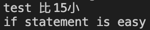
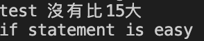
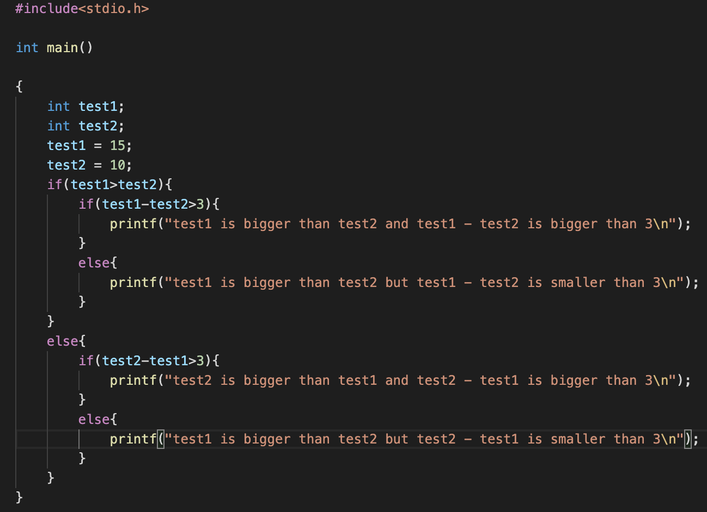

if.... else statement
if的使用方法：
ex:
int test;
test = 10;
if(test<15){
printf("test 比15小\n");
}
printf("if statement is easy\n");
output:

再來是搭配else的用法，類似中文，如果....，不然....。
if_else的使用方法：
ex:
int test;
test = 10;
if(test>15){
printf("test 比15大\n");
}
else{
printf("test 沒有比15大\n");
}
printf("if_else statement is easy\n");
output:

再來介紹巢狀結構的if_else：
什麼是巢狀結構，他就是一層一層的結構，if裡面還有if，看起來很像鳥巢。
ex:

test1跟test2的數字可以改喔！！！（看看不同數字的結果有什麼不一樣。）